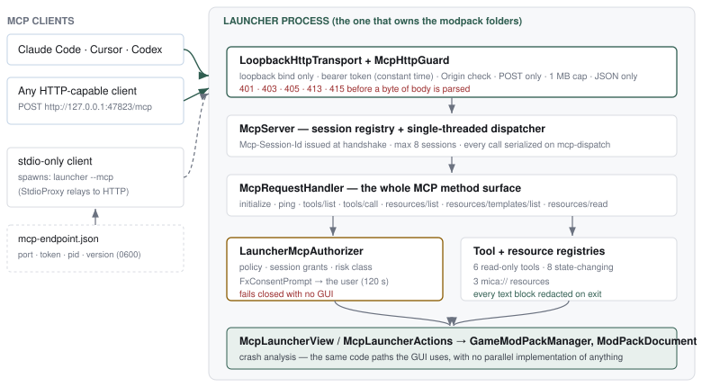
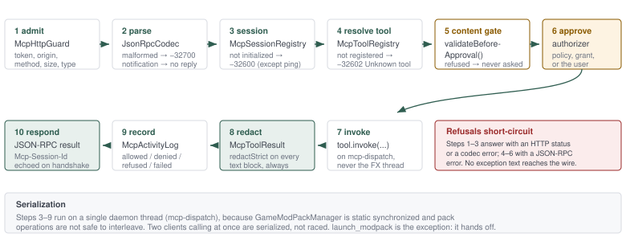
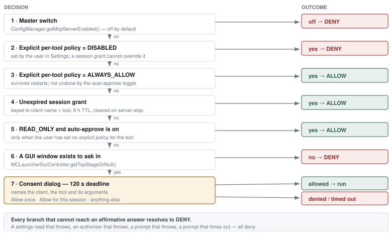

Setup, architecture, security model and a complete reference for every tool and resource the launcher exposes over the Model Context Protocol.
2025-06-18com.micatechnologies.minecraft.launcher.mcp (41 classes, 21 test classes)docs/pdf-generation-assets/mcp-server-guide → npm install && npm run buildThe launcher can host a Model Context Protocol server on loopback, so an MCP client — Claude Code, Cursor, Codex, or anything that speaks the protocol — can read your modpack library, explain why a game crashed, and, if you let it, install, edit, launch and uninstall packs. It is off by default, and everything it can do is gated twice: once by the settings you choose, and once by a prompt at the moment of the call.
MCP is a request/response protocol that lets a model call named tools and read named resources on a server. The launcher implements the server half. A connected client can:
diagnose_launch_failure returns the
launcher's own crash analysis — category, summary, suggested fixes — alongside the
raw report and the pack's version and loader, so the model answers "why did my game
crash" without you pasting logs anywhere.mica:// resource a client can re-read cheaply.Everything runs inside the launcher process that already owns the modpack folders, through the same code paths the GUI uses. There is no second implementation of installing a pack, and no separate process mutating files behind the launcher's back.
| Non-goal | Why |
|---|---|
| It is not an MCP client | The launcher never consumes an MCP server and never calls a model. No AI SDK is a dependency, and none is needed: the launcher is the thing being driven. |
| No network exposure | The listener binds InetAddress.getLoopbackAddress() and refuses to
serve a non-loopback peer. There is no LAN mode and no remote authentication
scheme to misconfigure. |
| No standalone server process | The launcher enforces single-instance because concurrent processes mutating the
same modpack folders is unsafe — SynchronizedFileManager is
in-process only. Every deployment shape therefore executes tools inside the one
launcher process. |
| No credentials, ever | No tool, resource, error or log entry may return an access token, a client token, a refresh token, the account UUID, or the MCP bearer token itself. Section 4.6 covers how that is enforced structurally rather than by convention. |
| No MCP SDK | The server surface is small and the protocol is JSON-RPC 2.0. It is hand-rolled against the Gson already in the tree rather than pulling Jackson and Reactor into a fat JAR that already carries JavaFX, JNA, Lanterna and three RGB vendor SDKs. |
The feature is shipped and usable. What follows is an honest ledger of where it stands, so this document is not read as describing more than exists.
mica:// resources, with templates--mcp stdio relayAutoStartManager (phase 5b)prompts/list, prompts/get)Chapters 2–10 describe what is implemented today, verified against the source. Chapter 11 lists what is missing in detail, including the parts of the original plan that were deliberately dropped rather than merely deferred.
Two toggles in Settings and one snippet pasted into your client. The launcher generates the snippet for you, already carrying the right path, port and token, because the interesting part of it is install-specific.
McpBootstrap.startIfEnabled() is
called from the GUI branch of LauncherSession.run. A TUI or headless
server run does not start it — and would fail closed on any tool needing consent,
because there would be no window to ask in.Open Settings → Security and scroll to MCP Server.
| Control | Default | Effect |
|---|---|---|
| Enable MCP server | Off | Binds the loopback listener, generates the bearer token on first use, writes
mcp-endpoint.json, and registers the read-only tools and resources.
Toggling it restarts the server immediately — no launcher restart needed. |
| Auto-approve read-only tools | On | Lets tools that only read state run without a prompt. Turn it off to be asked for
every single call, including list_modpacks. |
| Allow tools that change things | Off | The second opt-in — see §2.3. |
The status line under the toggles reads Running on 127.0.0.1:47823 with a count of connected clients, or Not running. It never shows the token.
Enabling the server on its own gives you a strictly read-only server. The eight state-changing tools are registered only when Allow tools that change things is also on.
The step from "a model can read my launcher" to "a model can install and launch things
on my machine" is worth making deliberately rather than as a side effect of enabling a
feature. With the second switch off, a state-changing tool is not denied — it
does not exist. A client asking for uninstall_modpack gets
-32602 Unknown tool, and tools/list never advertises it.
Each of those tools still asks before it runs, every time, unless you give it a standing policy in the tool-permissions list (§7.3) or grant it for the session at the prompt.
HTTP is the primary form. The launcher hosts a loopback server on a fixed port with a persisted token, so a client is configured once and stays configured across launches. In Settings → Security → Connecting a client, pick your client from the dropdown and press Copy; the snippet already contains the real port and the real token.
claude mcp add --transport http mica-launcher http://127.0.0.1:47823/mcp \
--header 'Authorization: Bearer <token>'~/.cursor/mcp.json{
"mcpServers": {
"mica-launcher": {
"url": "http://127.0.0.1:47823/mcp",
"headers": {
"Authorization": "Bearer <token>"
}
}
}
}~/.codex/config.toml[mcp_servers.mica-launcher]
url = "http://127.0.0.1:47823/mcp"
[mcp_servers.mica-launcher.http_headers]
Authorization = "Bearer <token>"Transport is Streamable HTTP: POST JSON-RPC to http://127.0.0.1:<port>/mcp
with Content-Type: application/json and
Authorization: Bearer <token>. Carry the Mcp-Session-Id
returned by the handshake on every subsequent request.
The snippets are generated from what these clients accepted at the time of writing. If a
client rejects one, check its own documentation — the URL and the
Authorization header are the parts that matter, and every client has some
way to express them.
Some clients can only spawn a subprocess and talk newline-delimited JSON-RPC over its stdin
and stdout. For those, register the launcher with --mcp:
# native install
'/Applications/Mica Minecraft Launcher.app/Contents/MacOS/Mica Minecraft Launcher' --mcp
# fat JAR
java -jar /path/to/MicaMinecraftLauncher-jar-with-dependencies.jar --mcpThat process is not a second launcher. It is a thin relay
(StdioProxy) that reads mcp-endpoint.json, forwards each line to
the running launcher's HTTP endpoint, and writes the reply back. It has two properties
worth knowing:
The relay is dispatched from LauncherCore.main() before the
single-instance lock is taken, so it works alongside an already-open launcher instead of
being turned away by it. stdout carries protocol only — every diagnostic goes
to stderr, and the relay never touches the launcher's logger.
If no launcher is running with the server enabled, the relay prints an explanation to stderr and exits with code 2. Cold-starting the launcher from the relay was planned and is not implemented; open the launcher first.
| Thing | Value |
|---|---|
| Release port | 47823 (LauncherConstants.MCP_SERVER_PORT) |
| Dev-build port | 47824, so a dev and a release launcher never collide |
| Override | config key mcpPort; there is no UI for it |
| Path | /mcp — any other path is not served |
| Endpoint file | <config folder>/mcp-endpoint.json, mode 0600 (ACL on Windows) |
| Contents | { "port", "token", "pid", "launcherVersion" } |
| Lifecycle | Written on start, deleted on shutdown. A file whose recorded pid is dead reads as absent |
If the configured port is already taken, the server falls back to an OS-assigned port rather than refusing to start. The Settings pane and the endpoint file both report the port actually bound, so an HTTP client configured with the fixed port will need updating in that case — the stdio relay picks it up automatically.
256 bits from SecureRandom, hex-encoded to 64 characters, stored in launcher
config and reused across launches.
A client's configuration names a URL and a token and is edited by hand. A token that rotated every launch would mean re-editing every client config on every start — which in practice means the feature goes unused or gets worked around. A stable token is the trade every local HTTP service makes, with the same mitigations: loopback only, owner-only storage, and a Regenerate button that invalidates every client still holding the old one and restarts the server on the spot.
In Settings the token is masked (3f9a21c8… (64 characters)) with
Show, Copy token and Regenerate beside
it. A stored value that is not a well-formed 64-character hex string — blank, truncated,
hand-edited — is replaced rather than used, because serving a malformed token would leave
the server running with a credential no client could ever match, which looks like a hang
rather than a misconfiguration.
Read the port and token out of the endpoint file, then handshake:
CFG=~/.MicaMinecraftLauncher/config/mcp-endpoint.json
PORT=$(python3 -c "import json;print(json.load(open('$CFG'))['port'])")
TOK=$(python3 -c "import json;print(json.load(open('$CFG'))['token'])")
curl -si -X POST "http://127.0.0.1:$PORT/mcp" \
-H "Authorization: Bearer $TOK" \
-H 'Content-Type: application/json' \
-d '{"jsonrpc":"2.0","id":1,"method":"initialize",
"params":{"protocolVersion":"2025-06-18","capabilities":{},
"clientInfo":{"name":"curl","version":"1"}}}'The response carries Mcp-Session-Id. Send it back on every following request;
without it the launcher opens a new, uninitialized session and refuses everything but
ping with -32600 Session is not initialized. Appendix B has the
rest of the calls.
| Symptom | Cause and fix |
|---|---|
401 with no body |
Missing or wrong bearer token. Re-copy it from Settings; if you pressed Regenerate, every client config needs updating. |
403 |
The peer is not loopback, or the request carried an Origin that is not
itself loopback — including Origin: null. Browser pages are refused
by design; see §4.2. |
405 |
Not a POST. The endpoint answers POST only; there is no GET/SSE stream. |
413 |
Body over 1 MB. A JSON-RPC tool call is small; this cap exists so a local process cannot exhaust launcher memory. |
415 |
Content-Type is not application/json. |
| Connection refused | The launcher is closed, the server is off, or it bound a fallback port. Check the Settings status line, then the endpoint file. |
-32600 Session is not initialized |
A call arrived before initialize, or the Mcp-Session-Id
header is not being carried. |
-32602 Unknown tool: uninstall_modpack |
Allow tools that change things is off. That is the second opt-in working as intended. |
-32003 Tool call was not approved |
Policy said DISABLED, you denied the prompt, the prompt timed out
after 120 s, or there was no window to show it in. |
| Tool call hangs for two minutes | A consent dialog is waiting behind another window. Every call is serialized, so one unanswered prompt stalls the rest until it times out. |
| Relay exits with code 2 | No running launcher with the server enabled. Start the launcher; there is no cold start. |
| Client says "server has no tools" | The handshake succeeded against a server whose master switch was on but which has
since stopped, or the client cached an old tools/list. Reconnect. |

--mcp relay which reads the endpoint file and speaks
HTTP on their behalf. Everything below the admission layer runs inside the launcher
process that owns the modpack folders.The launcher enforces single-instance because concurrent processes mutating the same modpack
folders is unsafe: SynchronizedFileManager serializes file access
in-process and knows nothing about a second JVM. A standalone MCP server that
touched packs directly was therefore never an option. Every deployment shape ends at the
same place — tools execute inside the one launcher process — and the stdio relay exists
precisely because MCP clients want to spawn a subprocess and the launcher cannot be one.
| Package / class | Responsibility |
|---|---|
mcp.McpBootstrap | The only lifecycle entry point. Owns the single server instance, the grant store, the activity log and the policy store; decides whether to start at all. |
mcp.McpServer | Binds the transport, publishes the endpoint file, owns the session registry and the single-threaded dispatcher. |
mcp.McpRequestHandler | The whole MCP method surface, with no transport or JavaFX dependency — which is what lets the protocol be tested headlessly. |
mcp.McpAccessToken | Generate, validate, persist and mask the bearer token. |
mcp.McpEndpointFile | Write, read, stale-check and delete mcp-endpoint.json. |
mcp.McpClientSetup | Generates the per-client configuration snippets shown in Settings. |
mcp.McpActivityLog | Bounded, in-memory, redacted-on-write record of what clients did. |
mcp.FxConsentPrompt | The consent dialog bridge; headless-safe and deadline-bounded. |
mcp.protocol.* | JsonRpcCodec (parse, frame, build errors), JsonRpcMessage, McpMethods, McpErrors. |
mcp.transport.* | LoopbackHttpTransport (the listener), McpHttpGuard (pure admission checks), StdioProxy (the relay). |
mcp.session.* | McpSession (identity, counters, init state), McpSessionRegistry (live sessions, cap of 8). |
mcp.tools.* | McpTool, McpToolRegistry, McpToolResult (the redaction boundary), ReadOnlyTools, MutatingTools, and the McpLauncherView / McpLauncherActions seams with their live implementations. |
mcp.resources.* | McpResource, McpResourceRegistry, McpResourceUri (the mica:// segment gate), LauncherResources. |
mcp.approval.* | McpRiskClass, McpApprovalPolicy, McpApprovalDecision, McpApprovalEngine (pure), LauncherMcpAuthorizer (production wiring), McpToolPolicyStore, McpGrantStore. |
The McpLauncherView / McpLauncherActions split is load-bearing
rather than stylistic. Tools never touch launcher internals directly; they read through a
view whose records have nowhere to put a token, a UUID or a filesystem path, and they act
through an interface with a fixed, reviewed set of operations. That is what makes §4.6 a
structural property instead of a rule someone has to remember.

tools/call from arrival to
reply. Refusals short-circuit: the earlier the stop, the less the caller learns.McpHttpGuard.admit() checks peer, origin,
token, method, size and media type, in that order, before a byte of body is parsed.JsonRpcCodec.parse() turns the body into a
message or an error. A notification produces no reply, ever — including an unknown
one, which is explicitly not an error in JSON-RPC.Mcp-Session-Id header resolves to a live
session, or a new one is created (subject to the cap of 8). Everything but
ping and initialize requires an initialized session, because
the client's self-reported name is half of every session-grant key.-32602 Unknown
tool. With state changes off, the mutating tools are genuinely not registered.tool.validateBeforeApproval() runs
before consent: a request the launcher would refuse anyway must never reach
the user as a question. Prompting for something that was never going to run is how a
consent dialog becomes noise to click through.LauncherMcpAuthorizer resolves policy and, when
required, asks (chapter 4).McpToolResult.toJson() passes every text block
through SensitiveDataRedactor.redactStrict.Protocol revision 2025-06-18. The server advertises
tools.listChanged = false and resources.subscribe = false,
resources.listChanged = false — it does not push change notifications, so a
client should re-list rather than wait to be told.
| Method | Behaviour |
|---|---|
initialize | Records clientInfo.name and
.version on the session, returns protocol version, capabilities and
serverInfo (Mica Minecraft Launcher + version). The response
carries Mcp-Session-Id. |
notifications/initialized | Logged; never answered. |
ping | Empty result. The one method allowed before the handshake. |
tools/list | Name, title, description and JSON input schema for every registered tool. |
tools/call | The full path in §3.3. |
resources/list | Concrete URIs, with per-pack instances enumerated from the live pack list. |
resources/templates/list | The {friendlyName}
templates. |
resources/read | Returns one text content block, redacted. |
| anything else | -32601 Unknown method. |
prompts/list and prompts/get have constants in
McpMethods but no implementation; they answer -32601.
| Code | Name | When |
|---|---|---|
-32700 | Parse error | Body is not JSON. |
-32600 | Invalid request | Not a valid JSON-RPC message; or a call before the handshake. |
-32601 | Method not found | Unknown method. |
-32602 | Invalid params | Missing/unknown tool name, missing argument, or a content gate refusal. |
-32603 | Internal error | The tool threw, a resource read threw, the session cap was hit, or dispatch failed. Never carries the exception's own message. |
-32002 | Resource not found | No resource matches the URI — including one rejected by the segment gate. |
-32003 | Request denied | The approval gate said no. |
"No crash report for this pack" is not a protocol error. Tools that could not do what
was asked return a normal result with isError: true and a message the
model can act on, so it corrects itself rather than treating the server as broken.
JSON-RPC errors are reserved for the protocol going wrong or the request being
refused.
Mcp-Session-Id header.The transport's accept loop runs on daemon threads. Every parsed message is dispatched
through a single-threaded executor named mcp-dispatch,
because GameModPackManager is static synchronized and several
pack operations are not safe to interleave. Two consequences follow:
launch_modpack hands off. LauncherCore.play()
blocks while the game downloads and prepares, so it is spawned onto its own task and
the tool reports that the launch started rather than holding dispatch.The threat to keep in front of you: launch_modpack runs
third-party mod code under your live Microsoft session; install_modpack and
add_mod_to_modpack download from model-chosen URLs;
uninstall_modpack deletes worlds. An MCP server hands those to whatever the
model decides to do. Every design choice below follows from that.
| # | Gate | What it stops |
|---|---|---|
| 1 | Master switch (mcpServerEnabled, off) |
Everything. No port binds, no token is generated, no file is written. |
| 2 | State-change switch (mcpAllowStateChanges, off) |
All eight mutating tools — they are not registered, so they do not exist on the wire. |
| 3 | Transport admission | Non-loopback peers, browser origins, unauthenticated callers, wrong method, oversized or non-JSON bodies (§4.2). |
| 4 | Handshake ordering | Any call from a client that has not said who it is. |
| 5 | Content gates | Install URLs the launcher already refuses, path traversal in a mod's install path, editing a manifest the launcher does not own, uninstalling or launching while a game runs (§4.7). |
| 6 | Approval engine | Anything the user's policy, grants and risk-class defaults do not permit (§4.3). |
| 7 | Consent dialog | Whatever the user says no to, plus anything nobody answers within 120 s (§4.4). |
| 8 | Redaction | Credentials in any outbound text, unconditionally (§4.6). |
| 9 | Activity log | Nothing — but it is how you find out afterwards what was allowed (§8). |
The listener binds loopback only and refuses to serve a non-loopback peer. Binding is not
the whole defence, though: the realistic attacker is a web page the user already
has open. A page can issue cross-origin requests to 127.0.0.1, and
DNS rebinding lets it do so under a hostname it controls. McpHttpGuard
therefore applies a fixed, ordered table — every check a pure function of request metadata,
which is what allows the whole table to be tested without opening a socket.
| Order | Check | Failure | Notes |
|---|---|---|---|
| 1 | Peer address is loopback | 403 | A peer that cannot be resolved is treated as not loopback. |
| 2 | Origin absent, or loopback | 403 | Absent is normal for non-browser clients and allowed. null — a sandboxed iframe or file: page — is refused. Bracketed IPv6 ([::1]) is handled correctly. |
| 3 | Bearer token matches | 401 | MessageDigest.isEqual, constant-time in the content, so a local attacker cannot recover the token byte by byte from response timing. |
| 4 | Method is POST | 405 | |
| 5 | Body ≤ 1 MB | 413 | Enforced on the declared length and again while reading. |
| 6 | Content-Type: application/json | 415 | Parameters such as ; charset=utf-8 are ignored. |
The ordering is deliberate. Peer and origin come first because they are absolute — a request from off-loopback or from a foreign browser origin is refused regardless of whether it happens to carry a valid token. Authentication comes next, so nothing beyond it can be used to probe the server without a token. Failures return the status and nothing else.

McpApprovalEngine.resolve() is
a pure function of its inputs — no config reads, no clock, no UI — so the entire
decision table is exercised by unit tests.Four rules inside that order are worth stating explicitly, because each was a deliberate choice rather than a consequence:
DISABLED. A user who
turns a tool off has overruled consent they gave earlier.ALWAYS_ALLOW the user chose deliberately: the more
specific instruction wins.| Class | Default | Meaning |
|---|---|---|
| READ_ONLY | ALWAYS_ALLOW* |
No state change. *Subject to the Auto-approve read-only tools toggle. |
| MUTATING | ASK |
Changes launcher or pack state recoverably — install, create, fork, add or remove a mod. |
| DESTRUCTIVE | ASK |
Deletes or overwrites user data — today, uninstall_modpack. |
| EXECUTE | ASK |
Runs third-party code or spawns processes — launch and stop. |
Three outcomes: Allow once, Allow for this session, and deny — which is what dismissing, cancelling or pressing Escape produces, so the safe answer is the one that requires no decision. A tool set to Always ask is not offered Allow for this session: that policy means every call is asked about.
The dialog names the client, the tool and the arguments, bounded: values truncated at 120 characters, at most 6 arguments rendered, structured values shown by type. An unbounded summary would push the meaningful part of the request off the bottom of the dialog.
Destructive calls add a sentence naming what would be lost.
uninstall_modpack computes the pack's footprint first, so the question is
"this permanently deletes 4.2 GB including 3 saved worlds" rather than
"delete this pack?" — worlds called out separately from bytes because they are the
part that is genuinely unrecoverable.
"Always allow, permanently" is not a button. A grant that survives restarts is a considered decision, not one to make while a model waits; it lives in Settings next to the tool's risk class, where it can be reviewed and revoked.
"Back up first, then continue" is not implemented. The destructive prompt names what would be lost but does not yet offer to save it. Take a backup yourself before approving an uninstall you are unsure about.
The wait is bounded at 120 seconds; on timeout the call is denied. The dialog itself stays on screen — the underlying helper offers no way to dismiss it — but the answer is already decided, which is the fail-closed direction.
| Per-tool policy | Session grant | |
|---|---|---|
| Set from | Settings → tool permissions list | The consent dialog's Allow for this session |
| Values | Default · Always allow · Always ask · Disabled | Allow, implicitly |
| Keyed by | Tool name | Client name + tool name |
| Lifetime | Persisted in launcher config; survives restarts | 8 hours, and cleared whenever the server stops |
| Precedence | Beats grants in both directions | Only applies where no explicit policy decides the call |
Grants are keyed to the client's name rather than to the transport connection because MCP clients reconnect frequently; a connection-scoped grant would re-prompt constantly and train the user to click through without reading. The 8-hour TTL is what stops "allow for this session" from quietly becoming permanent.
An unreadable or corrupt stored policy resolves to unset, never to a policy — so a damaged config degrades to "ask", never to standing permission.
No tool, resource, error message or activity-log entry may ever return a credential.
This is not a policy the user can relax and not something an ALWAYS_ALLOW
can override — it is enforced in the serialization layer, below the approval engine.
Never returned: Minecraft/Microsoft access tokens, client tokens, refresh
tokens; the account UUID; anything from the AES-256-GCM token cache or its machine-derived
key; the MCP bearer token, the single-instance IPC token, or the endpoint file's contents;
raw ${auth_access_token} / ${auth_session} expansions.
Permitted: the account username, in
get_launcher_status only — useful context, not a credential.
Three mechanisms enforce it, in order of how much they are relied upon:
McpLauncherView, whose records have no field for a token, a UUID or a
path. The primary control is the shape of the seam, not a filter.McpToolResult.toJson() runs
SensitiveDataRedactor.redactStrict over each block — access-token and
client-token flags in both --flag value and --flag=value
forms, the legacy token:<token>:<uuid> session string, dashed
and undashed UUIDs. Resource text goes through the same path. A tool
cannot return unredacted text through this type, including one written later
by someone who has not read this document.The dangerous surface is logs and crash reports, which are large, attacker-influenced, and historically carried the live access token on the game's command line. SHA-1 hashes survive redaction deliberately; they are how mods are identified.
| Rule | Enforced where |
|---|---|
| Resource URI segments | McpResourceUri.isSafeSegment: no /, no \, no
NUL, no control characters, not . or ... Percent-decoding
that fails leaves the raw text in place, so a deliberately malformed encoding
cannot slip a separator through unchecked. Listings skip packs whose names are not
safe segments, so a listing never advertises a URI the reader would refuse. |
| Mod install paths | MutatingTools.rejectUnsafeLocalPath: no absolute paths, no drive
letters, no .. segment, no control characters. Checked
before consent — a traversal attempt is not something to ask the user to
adjudicate. |
| Install and mod URLs | LauncherUriHandler.classifyInstallUrl(), the launcher's existing
install-source gate. A REJECT verdict refuses before any prompt;
REQUIRE_CONFIRMATION deliberately does not — an untrusted but
well-formed host is exactly what the consent dialog is for. |
| Editable manifests | Only manifests this launcher authored — resolved inside
<config>/mcp-manifests after normalisation — may be edited in
place. A pack installed from a remote manifest, or an imported
.mmcjson, is refused with a message pointing at
fork_modpack. |
| Live-game guards | uninstall_modpack refuses while that pack's game runs;
launch_modpack refuses a pack that is already running, an account
already playing another pack, and a launch with nobody signed in. Several games may
run at once otherwise. |
| Risk | Position |
|---|---|
| Any same-UID process can read the endpoint file | Accepted, and identical to the trust boundary the launcher's existing single-instance
IPC channel already documents. The file is 0600; a process running as
you can read it, and a process running as you could also read your session token
from the launcher's own config. |
| A malicious or confused model | The core case the consent model exists for. Mutating tools are off by default and ask every time; the prompt names the client, the tool and the arguments; the activity log records what happened. |
| Consent fatigue | Partially addressed: read-only auto-approval, session grants with a TTL, and batch-shaped tools that return lists rather than one item at a time. Per-client rate limiting and a deny all from this client action are not implemented. |
| A web page in the user's browser | Blocked by the origin rule plus a token the page cannot read. |
| Token theft from a client's config file | Real, and the reason Regenerate exists. The stdio relay avoids it entirely by never putting a token in client config. |
| A model choosing a hostile install URL | The launcher's existing install-source classification runs first; anything it does not outright reject is shown to the user in the prompt, naming the host. |
| Two clients issuing conflicting mutations | Serialized by the single-threaded dispatcher. Destructive tools re-check state inside their own validation before acting. |
| An unattended launcher | Prompts deny after 120 s rather than waiting forever. The stale dialog left on screen is cosmetic, but it is a known rough edge. |
Fifteen tools: seven that only read, eight that change things. The seven are registered whenever the server runs; the eight appear only when Allow tools that change things is on.
list_modpacks reports it. Names routinely contain spaces, colons and
version numbers (Fabric 1.21.5: 0.16.10); pass them verbatim.isError: true and a message naming list_modpacks so the model
can recover on its own instead of guessing again.All six are READ_ONLY and run without a prompt while Auto-approve read-only tools is on, which it is by default.
A pack's friendly name often embeds the version its author publishes, so a pack
called Alto: 26.9.3 can correctly report version 26.6.12 —
the one installed. Both numbers are right and neither can be inferred from the
other, which is why both are reported. This was found by running the server
against real packs, not by a test.
{ "name": "diagnose_launch_failure",
"arguments": { "friendlyName": "All the Mods 9" } }
→ { "friendlyName": "All the Mods 9", "version": "0.2.60",
"modLoader": "forge", "unstable": false,
"crashReportAvailable": true,
"category": "MISSING_DEPENDENCY",
"title": "A mod is missing a dependency",
"summary": "…", "suggestions": [ "…", "…" ],
"crashReport": "---- Minecraft Crash Report ----\n…" }The account UUID and every token are forbidden here by §4.6, and
McpLauncherView deliberately offers no way to reach them. Signed out,
username is empty.
As with get_launcher_status, the playing account appears by username
alone; its UUID and tokens are unreachable.
These eight are registered only when Settings → Security → Allow tools that
change things is on. With it off they are not denied — they are absent from
tools/list and answer -32602 Unknown tool. Each still asks
before every call unless you have given it a standing policy.
"Back up first, then continue" is specified but not implemented. The prompt tells you what you are about to lose; saving it first is still manual.
Resources cover what a client wants to read repeatedly, as opposed to
act on. They read through the same McpLauncherView as the tools, so they are
subject to the same bound on what they can reach, and their text leaves through the same
redaction path.
All resources use the mica:// scheme. Per-pack resources are templates over
{friendlyName}, and they enumerate their instances from the live pack list, so
a client can call resources/list and see one entry per pack rather than
guessing names. Names are percent-encoded in the emitted URIs —
mica://modpack/Fabric%201.21.5%3A%200.16.10/manifest — and decoded on the way
back in.
The containment checks run on the decoded segment. Validating the encoded form
and decoding afterwards is the classic way this kind of gate is bypassed —
%2e%2e%2f looks harmless until it doesn't. A segment containing
/, \, NUL or any control character, or equal to .
or .., is refused, and a percent sequence that fails to decode is checked
in its raw form rather than being let through. A listing skips any pack whose name is
not a safe segment, so it never advertises a URI that the reader would then refuse.
A URI that matches nothing — including one rejected by the gate — answers
-32002 No such resource.
| URI | MIME | Content |
|---|---|---|
mica://packs | application/json |
The pack index: every pack, installed and available, with the same seven fields
list_modpacks returns. Pretty-printed. |
mica://modpack/{friendlyName}/manifest | application/json |
The raw manifest JSON for one pack. Enumerated for every pack, installed or not. |
mica://modpack/{friendlyName}/crash-report | text/plain |
The most recent crash report for one pack, credentials stripped. Enumerated for installed packs only. |
The server advertises resources.subscribe = false and
listChanged = false: it does not push notifications when packs change, so a
long-lived client should re-list rather than wait to be told.
Everything lives in Settings → Security, below the malware
scanner and the mmcl:// deep-link toggle, in three cards.
| Control | Behaviour |
|---|---|
| Enable MCP server | Writes mcpServerEnabled and calls McpBootstrap.refresh(),
which stops and restarts the server in place. |
| Auto-approve read-only tools | Writes mcpAutoApproveReadOnly. Read immediately by the authorizer — no
restart needed. |
| Allow tools that change things | Writes mcpAllowStateChanges and refreshes, because the tool registry is
built at start. Connected clients should re-run tools/list. |
| Status line | Running on 127.0.0.1:<port> or Not running, plus the connected-client count. Never shows the token. |
| Control | Behaviour |
|---|---|
| Endpoint | http://127.0.0.1:<port>/mcp, showing the port actually bound. |
| Token + Show / Hide | Masked as 3f9a21c8… (64 characters) until revealed. |
| Copy token | Puts the full token on the clipboard. |
| Regenerate | Confirms first, then replaces the token and restarts the server. Every client configured with the old token stops working until updated. |
| Client dropdown + Copy | Claude Code · Cursor · Codex · Other (raw URL) · stdio-only client. The snippet below updates with the selection and already contains the real port and token. |
In a development run the resolved launcher path is the JVM itself, and
<jvm>/bin/java --mcp would start a bare JVM that does nothing. The
stdio snippet is replaced with a notice saying so and pointing at the HTTP options,
rather than emitting a command that is accepted and then silently fails.
The third card holds three lists and four buttons.
Consent answers "may this happen?". The activity log answers "what happened?". Without it, a user who clicked through a prompt three hours ago has no way to find out what they agreed to, which makes every approval decision unreviewable after the moment it is made.
| Property | Value |
|---|---|
| Scope | In memory, bounded to the most recent 200 entries, newest shown first. |
| Lifetime | Survives the server being stopped and restarted within one launcher run — toggling the feature off and on does not erase the record of what happened before, which is exactly what a user goes looking for after something surprising. It does not survive a launcher restart. |
| Fields | Timestamp, client name, tool name, decision, short detail. |
| Redaction | Every field passes redactStrict before storage, so a credential that reached an argument summary is never held in memory here at all. |
| Clearing | Clear activity in Settings. |
| Decision | Meaning |
|---|---|
refused | A content gate said no before the user was ever asked — bad URL, unsafe path, game running, unknown pack. |
denied | Policy said no, the user said no, the prompt timed out, or there was no GUI to ask in. |
allowed | Ran and succeeded. |
failed | Ran and failed. Exception text is deliberately not recorded — it carries paths and can carry command lines. |
The in-memory log is a review surface for the session, not an audit trail. What persists:
MCP allowed <client> -> <tool> (ALLOW_ONCE)), every
pre-approval refusal with its reason, and every tool failure with its stack trace.ModPackAuditLog, through the same code paths the GUI uses.All live in the launcher's configuration.json, written through
ConfigStore like every other setting.
| Key | Type | Default | Meaning |
|---|---|---|---|
mcpServerEnabled | boolean | false | The master switch. |
mcpAllowStateChanges | boolean | false | Registers the eight state-changing tools. |
mcpAutoApproveReadOnly | boolean | true | Read-only tools skip the prompt. |
mcpToolPolicies | JSON object | empty | Tool name → ALWAYS_ALLOW / ASK / DISABLED. An unreadable value resolves to "unset", never to a policy. |
mcpPort | int | 47823 (dev 47824) | The loopback port. No UI; edit the file to change it. |
mcpToken | string | empty | The persisted bearer token. Generated on first use; a malformed value is replaced. |
| Path | Purpose |
|---|---|
~/.MicaMinecraftLauncher/config/ | The client-mode config folder. A dev build uses ~/.MicaMinecraftLauncherDEV/. |
…/config/configuration.json | All six keys above. |
…/config/mcp-endpoint.json | Port, token, pid, launcher version. Owner-only; deleted on shutdown; a dead pid makes it read as absent. |
…/config/mcp-manifests/ | Manifests this launcher authored through create_modpack / fork_modpack. Only packs whose manifest resolves inside this directory may be edited in place. |
The endpoint file deliberately uses the client-mode config path rather than the
game-mode-dependent one, for the same reason SingleInstanceLock does: a client
discovering the endpoint has a different working directory from the launcher, so a relative
path would never agree between them.
| Constant | Value |
|---|---|
LauncherConstants.PROGRAM_ARG_MCP | --mcp |
LauncherConstants.MCP_SERVER_PORT / _DEV | 47823 / 47824 |
McpRequestHandler.PROTOCOL_VERSION | 2025-06-18 |
LoopbackHttpTransport.PATH | /mcp |
LoopbackHttpTransport.SESSION_HEADER | Mcp-Session-Id |
McpHttpGuard.MAX_BODY_BYTES | 1 MB |
McpSessionRegistry.MAX_SESSIONS | 8 |
McpApprovalEngine.DEFAULT_GRANT_TTL_MS | 8 hours |
FxConsentPrompt.CONSENT_TIMEOUT_SECONDS | 120 |
McpActivityLog.MAX_ENTRIES | 200 |
McpAccessToken.TOKEN_LENGTH | 64 hex characters (256 bits) |
StdioProxy.EXIT_NO_LAUNCHER | exit code 2 |
McpClientSetup.SERVER_NAME | mica-launcher |
The MCP package carries 407 test methods across 21 test classes, in the repository's established style: plain JUnit Jupiter, hand-rolled stubs, no mocking framework, no JavaFX, no network, no vendor SDKs.
| Seam | Tests | What is pinned |
|---|---|---|
JsonRpcCodec | 34 | Framing round-trip, malformed JSON, notification vs request, error construction. |
MutatingTools | 36 | Schemas, pre-approval gates, path-traversal rejection, size formatting, destructive framing. |
McpRequestHandler | 33 | Handshake ordering, unknown methods, denied tools, throwing tools, resource reads. |
McpHttpGuard | 27 | The full admission table, including bracketed IPv6 origins and Origin: null. |
McpResourceUri | 27 | The containment gate, with encoded spellings of every rejected character — not just the literal ones. |
ReadOnlyTools | 25 | Every tool's success and failure shapes against a stub view. |
McpClientSetup | 24 | Snippet generation, shell quoting of paths with spaces, TOML escaping, the unpackaged-run notice. |
McpApprovalEngine | 23 | The decision table across master switch × policy × grant × risk class × GUI availability, asserting fail-closed. |
McpServerLoopbackTest | 18 | A real socket: non-loopback refusal, 401 on a bad token, session issuance. |
McpToolPolicyStore | 18 | Persistence round-trip; a corrupt value resolving to "unset". |
LauncherMcpAuthorizer | 17 | Grant lifecycle, prompt answers, every throw-path denying. |
McpToolResult | 17 | That no synthetic token or UUID escapes un-redacted, through results or errors. |
| Others | 108 | Endpoint file staleness, token well-formedness and masking, activity-log bounding and redaction, registries, resources, the stdio relay, the consent prompt's argument summary. |
Across the whole project the suite now stands at 115 test classes. CI runs
mvn -B test as its own job before the three-platform package matrix, so a
failing MCP test blocks a PR like any other.
Unit tests say whether the seams behave, not whether the feature works. The read path was
therefore driven for real — a harness calling McpBootstrap.startIfEnabled()
against the actual dev config and the installed packs, over HTTP with curl.
| Exercised | Result |
|---|---|
| Handshake, protocol version, server info | As specified; Mcp-Session-Id issued and carried |
tools/list with state changes off | The six read-only tools only |
list_modpacks, get_launcher_status | Real installed packs; signed-out reported with an empty username |
resources/list and read | Correctly percent-encoded per-pack URIs that resolve back; real manifest returned |
diagnose_launch_failure with no crash on record | Success with a note, not an error |
| No bearer token / wrong token | 401 |
Origin: http://evil.example · Origin: null | 403 |
Origin: http://localhost:3000 | 200 |
Content-Type: text/plain · GET | 415 · 405 |
| Tool call before the handshake | -32600 Session is not initialized |
mica://modpack/%2e%2e/manifest | -32002 No such resource |
uninstall_modpack with state changes off | -32602 Unknown tool |
| Endpoint file | Written -rw------- with port, 64-character token and pid; deleted on shutdown, port released |
A pack's friendly name embeds the version its author publishes, so "Alto: 26.9.3"
reported version 26.6.12 — the installed one. Both are correct and irreconcilable from
the output, which is why PackSummary now carries latestVersion
and updateAvailable as well. No unit test could have caught it: the stub
returned whatever version the test asked for.
These surfaces have no automated coverage. Walk them after any change:
-32003 rather than hanging.curl: point one at the HTTP endpoint, then at
launcher --mcp, and ask it why a game crashed.| Limitation | Detail |
|---|---|
| The launcher must be open | There is no background or tray-resident mode. Closing the window stops the server. |
| GUI mode only | startIfEnabled() is called from the GUI branch of
LauncherSession.run. TUI and headless server mode never start it. |
| The client list is a snapshot | Refreshed on pane build and on Refresh. A live list needs an observable session registry. |
| A timed-out consent dialog stays on screen | The answer is already decided — deny — so this is cosmetic, but the stale dialog has to be dismissed by hand. |
| One consent prompt blocks every call | Dispatch is single-threaded by design. An unanswered prompt stalls the queue for up to two minutes. |
| No cold start from the relay | launcher --mcp exits with code 2 when no launcher is running. |
| Only authored manifests are editable | add_mod_to_modpack and remove_mod_from_modpack refuse a
pack installed from a remote manifest. Fork it first. |
| No per-modpack scoping | A client granted a tool holds it for every pack; "this client may only touch pack X" does not exist. |
| No rate limiting | There is no per-client prompt throttle and no deny all from this client action. |
| Three English strings use "(s)" | {0} tool call(s) and friends do not translate cleanly; translators
rendered the meaning, but the source would be better as a real plural form. |
The original plan is broader than what shipped. What remains, roughly in the order it would be worth doing:
list_modpack_mods,
search_modrinth, get_modrinth_project,
check_mod_updates, detect_mod_conflicts,
get_game_log, list_java_runtimes,
list_modpack_backups, list_server_favorites. Each has an
existing launcher class behind it; these are adapters, not new capability.set_modpack_settings,
update_modpack, export_modpack (needs destination-path
validation — it writes outside the launcher directory),
create_modpack_backup, restore_modpack_backup,
delete_modpack_backup.…/mods, …/log, and
mica://launcher/log.NotificationManager into a TrayPresenceManager, close-to-tray
with setImplicitExit(false) under a single owner, MCP status and
Quit in the shared shell menu, and a first-close toast so a server is never
left running unknowingly. Background mode must refuse to enable where
SystemTray.isSupported() is false — a background process with no visible
way to stop it is not acceptable.AutoStartManager with
per-user backends — HKCU\…\Run, a LaunchAgent plist,
~/.config/autostart — plus a --background flag distinct from
--mcp, and config/OS reconciliation on startup where the OS wins.diagnose_crash, plan_modpack)
and resource change notifications.No real MCP client has been driven against the server end to end, and the state-changing tools have not been exercised against a live launcher — the verification run in §10.2 deliberately exercised nothing that could change the machine. Both are worth doing before the feature is described as finished.
One complete exchange, as a client actually performs it. Requests are
POST /mcp with Content-Type: application/json and
Authorization: Bearer <token>; every request after the first also carries
Mcp-Session-Id.
→ {"jsonrpc":"2.0","id":1,"method":"initialize","params":{
"protocolVersion":"2025-06-18","capabilities":{},
"clientInfo":{"name":"Claude Code","version":"2.0.1"}}}
← HTTP/1.1 200 · Mcp-Session-Id: 6f1c0f0a-…
{"jsonrpc":"2.0","id":1,"result":{
"protocolVersion":"2025-06-18",
"capabilities":{"tools":{"listChanged":false},
"resources":{"subscribe":false,"listChanged":false}},
"serverInfo":{"name":"Mica Minecraft Launcher","version":"3.0.0"}}}
→ {"jsonrpc":"2.0","method":"notifications/initialized"}
← HTTP/1.1 202 · (no body — a notification is never answered)→ {"jsonrpc":"2.0","id":2,"method":"tools/list"}
← {"jsonrpc":"2.0","id":2,"result":{"tools":[
{"name":"list_modpacks","title":"List modpacks",
"description":"Lists every modpack the launcher knows about…",
"inputSchema":{"type":"object","properties":{}}},
{"name":"get_modpack_info","…":"…"},
{"name":"get_modpack_manifest","…":"…"},
{"name":"get_crash_report","…":"…"},
{"name":"diagnose_launch_failure","…":"…"},
{"name":"get_launcher_status","…":"…"}]}}→ {"jsonrpc":"2.0","id":3,"method":"tools/call","params":{
"name":"list_modpacks","arguments":{}}}
← {"jsonrpc":"2.0","id":3,"result":{"content":[{"type":"text","text":
"{\n \"modpacks\": [\n {\n \"friendlyName\": \"All the Mods 9\",
\"version\": \"0.2.60\", \"latestVersion\": \"0.2.62\",
\"updateAvailable\": true, \"modLoader\": \"forge\",
\"installed\": true, \"unstable\": false\n }\n ],\n
\"count\": 1\n}"}],"isError":false}}→ {"jsonrpc":"2.0","id":4,"method":"resources/read","params":{
"uri":"mica://modpack/All%20the%20Mods%209/manifest"}}
← {"jsonrpc":"2.0","id":4,"result":{"contents":[{
"uri":"mica://modpack/All%20the%20Mods%209/manifest",
"mimeType":"application/json",
"text":"{ \"packName\": \"All the Mods 9\", … }"}]}}→ {"jsonrpc":"2.0","id":5,"method":"tools/call","params":{
"name":"launch_modpack","arguments":{"friendlyName":"All the Mods 9"}}}
… the launcher shows: "Claude Code wants to use \"Launch modpack\"",
naming the tool, its description and its arguments. The request is
held — for up to 120 seconds — until the user answers.
← (allowed) {"jsonrpc":"2.0","id":5,"result":{"content":[{"type":"text",
"text":"Started launching \"All the Mods 9\". The launcher window shows
progress; the game takes a while to appear."}],"isError":false}}
← (denied) {"jsonrpc":"2.0","id":5,"error":{"code":-32003,
"message":"Tool call was not approved: launch_modpack"}}→ {"jsonrpc":"2.0","id":6,"method":"tools/call","params":{
"name":"install_modpack","arguments":{"url":"ftp://example.com/pack.json"}}}
← {"jsonrpc":"2.0","id":6,"error":{"code":-32602,
"message":"That install URL was refused by the launcher's install-source
rules. Modpack URLs must be well-formed https links."}}Everything below assumes $PORT, $TOK and
$SID are set as in §2.8. Useful for confirming the server is healthy without
involving a client.
CFG=~/.MicaMinecraftLauncher/config/mcp-endpoint.json
PORT=$(python3 -c "import json;print(json.load(open('$CFG'))['port'])")
TOK=$(python3 -c "import json;print(json.load(open('$CFG'))['token'])")
mcp() { # mcp '<json body>'
curl -s -X POST "http://127.0.0.1:$PORT/mcp" \
-H "Authorization: Bearer $TOK" \
-H 'Content-Type: application/json' \
${SID:+-H "Mcp-Session-Id: $SID"} \
-d "$1"
}SID=$(curl -si -X POST "http://127.0.0.1:$PORT/mcp" \
-H "Authorization: Bearer $TOK" -H 'Content-Type: application/json' \
-d '{"jsonrpc":"2.0","id":1,"method":"initialize","params":{
"protocolVersion":"2025-06-18","capabilities":{},
"clientInfo":{"name":"curl","version":"1"}}}' \
| awk -F': ' 'tolower($1)=="mcp-session-id"{print $2}' | tr -d '\r')
echo "session: $SID"# what tools does this build expose right now?
mcp '{"jsonrpc":"2.0","id":2,"method":"tools/list"}'
# the pack library
mcp '{"jsonrpc":"2.0","id":3,"method":"tools/call",
"params":{"name":"list_modpacks","arguments":{}}}'
# why did it crash?
mcp '{"jsonrpc":"2.0","id":4,"method":"tools/call",
"params":{"name":"diagnose_launch_failure",
"arguments":{"friendlyName":"All the Mods 9"}}}'
# what can be read repeatedly?
mcp '{"jsonrpc":"2.0","id":5,"method":"resources/list"}'
mcp '{"jsonrpc":"2.0","id":6,"method":"resources/templates/list"}'
# liveness, valid even before the handshake
mcp '{"jsonrpc":"2.0","id":7,"method":"ping"}'H="Content-Type: application/json"
B='{"jsonrpc":"2.0","id":9,"method":"ping"}'
U="http://127.0.0.1:$PORT/mcp"
curl -so /dev/null -w '%{http_code} no token\n' -X POST "$U" -H "$H" -d "$B"
curl -so /dev/null -w '%{http_code} bad token\n' -X POST "$U" -H "$H" -H 'Authorization: Bearer nope' -d "$B"
curl -so /dev/null -w '%{http_code} evil origin\n' -X POST "$U" -H "$H" -H "Authorization: Bearer $TOK" -H 'Origin: http://evil.example' -d "$B"
curl -so /dev/null -w '%{http_code} null origin\n' -X POST "$U" -H "$H" -H "Authorization: Bearer $TOK" -H 'Origin: null' -d "$B"
curl -so /dev/null -w '%{http_code} GET\n' -X GET "$U" -H "$H" -H "Authorization: Bearer $TOK"
curl -so /dev/null -w '%{http_code} text/plain\n' -X POST "$U" -H 'Content-Type: text/plain' -H "Authorization: Bearer $TOK" -d "$B"
# expected: 401 401 403 403 405 415# traversal attempt -- expect -32002 No such resource
mcp '{"jsonrpc":"2.0","id":10,"method":"resources/read",
"params":{"uri":"mica://modpack/%2e%2e/manifest"}}'Where to look when something in this document needs checking against the code.
Paths are relative to
src/main/java/com/micatechnologies/minecraft/launcher/.
| File | Lines | Read it for |
|---|---|---|
mcp/McpBootstrap.java | 366 | Whether the server starts, what gets registered, token and policy plumbing. |
mcp/McpServer.java | 352 | Bind, endpoint file, session lookup, dispatch serialization. |
mcp/McpRequestHandler.java | 374 | Every method, every error code, the order of the gates in a tool call. |
mcp/McpClientSetup.java | 369 | The exact snippets Settings generates, and their quoting rules. |
mcp/McpEndpointFile.java | 228 | File format, permissions, stale-pid handling. |
mcp/FxConsentPrompt.java | 233 | Dialog wording, argument summarisation, the 120 s deadline. |
mcp/McpAccessToken.java | 157 | Token generation, validation, masking. |
mcp/McpActivityLog.java | 162 | What is recorded and how it is redacted. |
mcp/transport/LoopbackHttpTransport.java | 344 | The listener, status codes, body limits. |
mcp/transport/McpHttpGuard.java | 306 | The admission table — the clearest single file in the package. |
mcp/transport/StdioProxy.java | 218 | The relay, and what it does when the launcher is gone. |
mcp/approval/McpApprovalEngine.java | 158 | The decision order, as a pure function. |
mcp/approval/LauncherMcpAuthorizer.java | 226 | How that decision is wired to settings, grants and the prompt. |
mcp/approval/McpToolPolicyStore.java | 262 | Policy persistence and its fail-safe parsing. |
mcp/approval/McpGrantStore.java | 223 | Session grants and their TTL. |
mcp/tools/ReadOnlyTools.java | 444 | The six read-only tools, schemas and output shapes. |
mcp/tools/MutatingTools.java | 733 | The eight state-changing tools, their pre-approval gates and consent framing. |
mcp/tools/McpToolResult.java | 188 | The redaction boundary. |
mcp/tools/LiveMcpLauncherView.java | 395 | What the tools can actually see. |
mcp/tools/LiveMcpLauncherActions.java | 469 | What they can actually do, and the authored-manifest rule. |
mcp/resources/McpResourceUri.java | 203 | The mica:// containment gate. |
mcp/resources/LauncherResources.java | 219 | The three resources and their enumeration. |
utilities/SensitiveDataRedactor.java | — | redact vs redactStrict, and which patterns each applies. |
LauncherCore.java :224 | — | The --mcp dispatch, before the single-instance lock. |
LauncherSession.java :318 | — | Where the server is started, and why only in the GUI path. |
gui/MCLauncherSettingsGui.java | — | The Settings pane's behaviour; resources/gui/settingsGUI.fxml for its layout. |
Tests live under src/test/java/…/mcp/, one class per production class, and are
the fastest way to confirm a behaviour described here without starting the launcher.
This document is generated from
docs/pdf-generation-assets/mcp-server-guide/guide.html. Edit that file and run
npm run build in the same directory to regenerate
docs/MCP_SERVER_GUIDE.pdf; do not edit the PDF directly. Copyright © 2026 Mica
Technologies, GNU GPLv3.